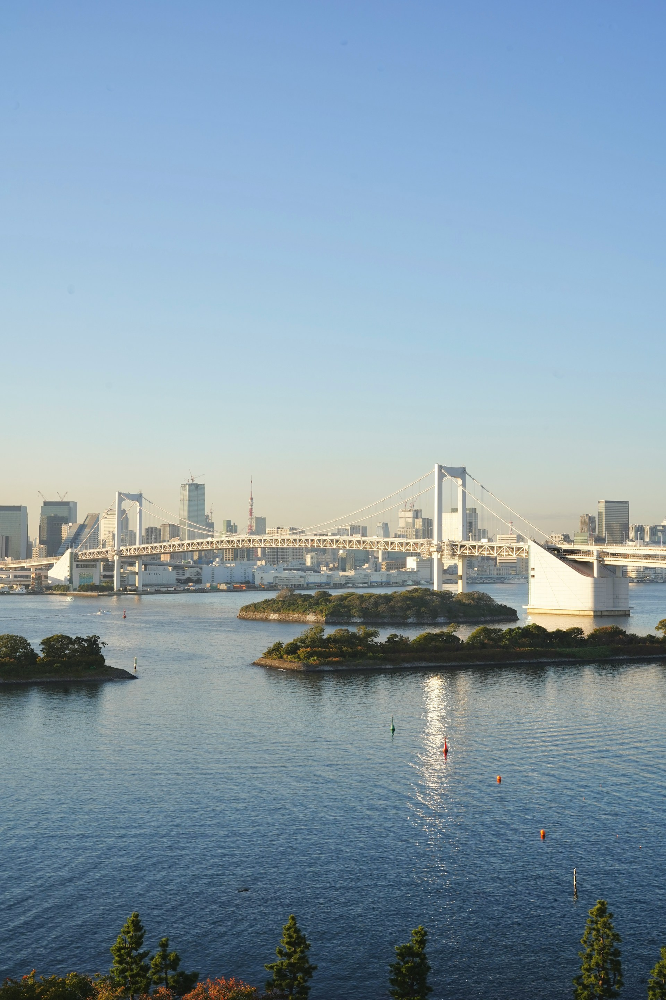

{kind=link}
| cidade | mín dez | máx dez | mín jan | máx jan |
|---|---|---|---|---|
| Tokyo | 5 | 12 | 2 | 10 |
| Kyoto/Osaka | 5 | 12 | 3 | 9 |
| Fukuoka | 5 | 13 | 3 | 10 |
| Sapporo | -4 | 2 | -8 | -1 |
| Naha (Okinawa) | 16 | 21 | 14 | 19 |
Japão 2027
Informações úteis para a viagem
1 Recapitulando e definindo as bases
O quê? Viagem ao Japão
Quando? Final de 2027
Como? Como cada um de vocês quiser e decidir
A ideia, vale sempre reforçar, é que a viagem não será uma excursão, então tá tudo bem se alguém quiser ir antes ou depois, ficar mais ou ficar menos, conhecer montanhas com neve ou preferir ir tirar foto com a Minnie na Disney.
Pensem que vocês terão um facilitador antes e durante a viagem, auxiliando na organização e na realização do objetivo, além de dar algum suporte que possa ser útil lá no Japão. Mas não precisa estar todo mundo junto o tempo todo. Aliás, acho que seria legal estar junto em algum momento, não precisa nem ser a maior parte da viagem de ninguém. Conversem entre vocês porque também tá tudo bem se alguém quiser grudar no amiguinho (desde que com consentimento, por favor), o importante é a gente diminuir o risco de emputecimentos, brigas, tretas, porradarias, mau-humor e cansaços desnecessários.
Como isso será possível? Simples, meus caros pimpolhinhos das gírias, eu vou estar atento às movimentações de todos e a partir disso vejo quando precisarei embarcar. Minha ideia é chegar primeiro e sair depois, mas não vou atrasar meu planejamento e digo logo que vou comprar as passagens com um ano de antecedência. Sim, 12 meses, 365 dias.
Pra isso mas também pra todo o resto deixo uma dica de amigo: se informem e se programem desde já (isso pra não falar da grana, né, cujo melhor cenário era poupar desde ontem – mas ainda dá tempo, não se esqueçam que dá pra simular os gastos na planilha). Dependendo de como forem viabilizar o rolê de vocês pode ser interessante já começar os arranjos, reservas (e gastos, humpf) com essa antecedência de um aninho. Não quer dizer que precisa estar tudo pronto, claro, mas não deixem pra depois esse basicão.
Nos próximos meses atualizarei constantemente este site com dois tipos de informações: destinos que podem interessar, que é pra ajudar vocês a terem uma noção do que há além de Tokyo e Kyoto, e a logística e a burocracia que estarão envolvidas – hospedagem, transporte, grana, internet, comida, japonês…
Perguntem, compartilhem (dúvidas e pensamentos, esse site não!), não hesitem nem sintam vergonha de se manifestar. Afinal agora somos mais que amigos, somos tripmates! E corrijam o que estiver errado, por favor.
Já vou deixar a seguir uma fonte maravilhosa de informação, que ainda usarei bastante e que vale a pena fuçar inteira. Não é a única, não é nem a melhor dependendo do propósito, mas ajuda sobremaneira.
1.1 Links úteis
Japan Guide - Find Your Destination
Japan Guide - Explore Your Interests
Japan Guide - Plan a trip - Before you go
Japan Guide - Shinkansen (trem-bala)

2 O que resolver ainda no Brasil
2.1 Visto
Hoje o Japão não exige visto para brasileiros, mas o atual acordo finda antes de nossa viagem, já no final de setembro de 2026. As perspectivas para renovação parecem boas mas, como nos ensinou Celso Roth, cautela é fundamental. Tratemos, pois, como vinha sendo antes o processo do visto.
Até setembro de 2023 era tudo chato mas rápido e fácil (tem como!?): você programava a viagem inteira primeiro e depois ia até o consulado (tem em Curitiba, tem em São Paulo) munido de documentação que incluía os comprovantes de passagens e de hospedagens, além daqueles relacionados ao custeio da viagem (o que às vezes significava compartilhar extrato bancário ou declaração de imposto de renda…), pagava a taxa (R$ 104 para única entrada ou R$ 206 para múltiplas entradas) e depois de um ou dois dias voltava pra pegar o passaporte já com o visto.
Mamão com açúcar Anmitsu, né? Mas a comprovação financeira às vezes era pedra no sapato.
Caso alguém aí tenha outro passaporte, dá pra checar aqui se também tem isenção de visto.
Nota
Tecnicamente, a isenção é válida para viagens de até 90 dias a turismo e para quem tiver passaporte eletrônico (com chip). Acho que a chance disso englobar todos nós é imensa mas veja aí se teu passaporte não é mimeografado ou sei lá.
2.2 Seguro (ou assistência) de viagem
Contratem. Simples assim. Torço pra que nem dor de cabeça ninguém tenha, mas o sistema de saúde japonês não será fácil de acionar nem barato caso seja necessário. As farmácias comuns, aliás, têm uma gama mais limitada de medicamentos (suficiente pro dia-a-dia, sem neura!) e o resto é só com receita, muitas vezes nas farmácias das clínicas e hospitais.
Já usei Assist Card (no Japão, inclusive) e tenho usado Allianz Travel (o link deles com o Melhores Destinos chega a ter 70% de desconto algumas vezes por ano), acho que são bem dignos. Usei uma vez o Vital Card e foi uma decepção.
Cotando aqui na louca algumas opções agora, só pra ilustrar de quanto estamos falando:
- 15 dias a partir de R$ 295
- 20 dias a partir de R$ 393
- tem ainda o anual (para viagens de até 30 dias), que tá com as vendas temporariamente suspensas no momento
2.3 Viajando com medicamentos
Tem remédio comum aqui que é proibido lá. Pseudoefedrina, por exemplo, que é normal junto de anti-histamínicos, não pode (você conseguiria fabricar metanfetamina a partir dela, pois veja só). Vale a pena checar até no caso da farmacinha de viagem, mas obviamente o que também tem venda controlada aqui merece mais atenção. Não se esqueçam de checar tudo com antecedência porque pode ser necessária autorização prévia, os links a seguir ajudam:
Guide to Bringing Medicines Into Japan
Information for those who are bringing medicines for personal use into Japan
Bringing Medication into Japan
Apesar da barreira da língua, você vai encontrar facilmente medicamentos para as demandas mais simples (dor de cabeça, azia, dor muscular, por exemplo). O que pode acontecer é não achar a classe ou o princípio ativo com que está acostumado (dor de cabeça lá é caso pra ibuprofeno).
2.4 Clima
Estará frio. Ou não. Depende de onde você vai. Mas provavelmente estará frio. Médias em celsius:
De qualquer forma, é um frio ok porque você só vai sentir nos ambientes externos mesmo. Até em trams eles usam climatização.
2.5 Moeda (e IC cards)
Não compre ienes no Brasil! Vai tomar prejuízo à toa. Dólar é uma boa opção, a conversão lá é decente mesmo no aeroporto.
Se possível cheque contas como as da Nomad e da Wise, os cartões podem ser usados diretamente nos estabelecimentos ou para sacar ienes lá, também sem taxas abusivas (muito pelo contrário).
Aliás vai ser importante sempre estar com algum dinheiro de papel (ou de metal, já que há moedas de até 500 ienes – quase R$ 17 na cotação de hoje) porque há muitos lugares que só recebem em espécie.
Por outro lado, o uso dos cartões de transporte (IC cards como Suica e Pasmo) é cada vez mais comum e eles já se tornaram uma forma de pagamento cotidiana nas grandes cidades. Kombinis (as onipresentes lojas de conveniência), lojas de roupa, restaurantes, máquinas de bebidas e até hotéis os aceitam. Suica, Pasmo e Icoca já estão integrados com o Apple Pay e podem ser gerados diretamente na Apple Wallet (o uso em dispositivos Android é mais complicado mas ainda assim possível). Também é possível comprar um cartão físico lá na chegada caso queiram ou precisem.
Ainda, há diferentes IC cards porque cada cidade usava seu cartão mas hoje eles estão quase que totalmente integrados e, salvo exceções, será possível usar um cartão (originalmente) de Tokyo em Osaka e Fukuoka e Sapporo sem o menor problema.
O que eu faria: sacaria ienes lá e usaria muito os IC cards. Ou ai-shi kaa-do, como diriam eles.
2.6 Takuhaibin (serviços de bagagem)
A coisa mais normal do mundo para um japonês é viajar só com uma coisinha ou outra consigo e mandar tudo o que for mais pesado, volumoso ou chato de carregar por meio dos serviços de entrega. As empresas que os ofertam têm lojas (e caminhões) por todos os lados e usam ainda aeroportos, kombinis e hotéis como pontos de retirada ou de entrega. É prático, acessível, eficiente e pontual.
Em grande parte das situações a bagagem (ou encomenda) é entregue em um ou dois dias, em casos excepcionais (e com um preço mais salgado) é possível encontrar até entrega no mesmo dia. A opção mais conhecida é a do simpático kuroneko (gato preto) da Yamato (ou takkyubin ou TA-Q-BIN), mas não é a única.
{kind=link}
Recomendo que, a depender do trajeto, do meio de transporte e da bagagem, se programem para utilizar o serviço. Ainda vamos falar da etiqueta japonesa mas já registro que pode ser até mesmo constrangedor ser o único idiota a atrapalhar os outros em estações e trens com muita bagagem, fora que às vezes bagagens grandes podem exigir reserva prévia ou mesmo ser proibidas. Para eventuais deslocamentos de avião vai sair bem mais em conta que uma bagagem paga à parte.
Caso vocês sejam do tipo que vai só com uma mochila e volta com aproximadamente 5 toneladas de comprinhas desencanem, ajeitem tudo uns dias antes e mandem do hotel pro aeroporto. Sério, vale demais a paz de espírito (mas eu vou apelidar de Belle Silva sem dó).
Alguns exemplos de preços e prazos:
| de | para | prazo (dias) | custo (¥) | custo (R$) |
|---|---|---|---|---|
| Tokyo (aeroporto) | Tokyo (hotel) | 2 | 1680 | 57 |
| Kyoto/Osaka (aeroporto) | Kyoto/Osaka (hotel) | 2 | 1680 | 57 |
| Tokyo | Kyoto/Osaka | 2 | 1920 | 65 |
| Tokyo | Fukuoka | 3 | 2120 | 72 |
| Tokyo | Sapporo | 3 | 2720 | 92 |
| Tokyo | Naha (Okinawa) | 3 | 2720 | 92 |
2.7 Deslocamento interno
Viajar dentro do Japão é muito fácil, ainda que não muito barato – e mesmo o transporte dentro das cidades onera um pouco a viagem. Você pode pesquisar deslocamentos com precisão no excelente Navitime, cujo app pra iPhone ou Android se chama Japan Travel, mas é bastante provável que usemos trens, trens e mais trens.
Há variados tipos deles mas o shinkansen (trem-bala), de shin = “nova” e kansen = “linha principal” é, bem, a principal opção onde estiver disponível:

Eu não usei trens rápidos em outros lugares mas acho que ao menos pra quem nunca usou um vale a pena incluir na viagem até pela experiência. E se viajar entre Tokyo e Nagoya (ou qualquer outra cidade mais a oeste) você ainda pode se deparar com essa cena linda de meu deus:

Este artigo aqui é um guia excelente e completíssimo sobre o shinkansen, não deixem de dar uma olhada.
Mas sem desmerecer os trens comuns também, que dificilmente deixarão de ser usados, seja em deslocamentos mais curtos, seja onde não há shinkansen, seja por terem rotas mais turísticas.
Ônibus são uma opção menos confortável, eu diria até que potencialmente problemática para pessoas um pouco maiores (seja para cima, seja para os lados), e isso mesmo em deslocamentos curtos. Os próprios veículos muitas vezes são menores que os que rodam por aqui e, de todo modo, o interior chega a ser meio deprimente compacto demais às vezes. De todo modo, há ônibus noturnos pra quem estiver muito muquirana querendo evitar diária de hotel, enquanto trens noturnos praticamente não existem no Japão mais.
Talvez não pareça mas ainda assim o avião é bastante utilizado por lá. A demanda é tão grande que chegam a usar aviões grandes, de dois corredores, em trajetos curtos como o entre Tokyo e Osaka, de menos de 1h – a viagem de shinkansen leva 2h30’. Eu não acho que valha a pena nestas situações, mas para ir a Kyushu (a ilha mais a oeste no mapa, onde ficam Fukuoka, Nagasaki e Kagoshima) e Hokkaido (a ilha mais ao norte, alcançada pelo shinkansen apenas até a bem charmosinha Hakodate mas cuja capital é Sapporo) direto pode ser bem melhor (não é possível ir de Tokyo a Sapporo de trem em muito menos que 8h e a viagem da capital a Kagoshima leva quase 7h). Okinawa, o arquipélago que nem aparece no mapa acima e que tem essa cara meio de Caribe japonês (!?) não é acessível senão por avião (ou lentos navios que partirão de perto de Kagoshima).
{kind=link}
Passes de trem podem ser uma opção econômica, mas foi-se o tempo em que representavam uma economia sensível. Voltaremos a falar deles depois!

3 Tokyo, o destino óbvio
Ir para o Japão sem passar por Tokyo beira o impossível, então era inevitável falar da capital como o primeiro possível destino de viagem. Por outro lado, já tem tanta informação sobre ela por aí que nem faz sentido eu querer explicar muita coisa.
Ótima oportunidade pra lembrar que não existe ter-que. Não caiam no conto do lugar que você tem que conhecer, da coisa que você tem que fazer ou então da variação de que você não pode voltar sem ter feito/visto/experimentado X. Primeiro que viagem boa é a que a gente faz com o que nos dá na telha, de acordo com nossos gostos e interesses. Depois que Tokyo é tão grande e tem tanta coisa diferente que você pode passar 30 dias lá e ainda assim vai faltar tempo pra alguma coisa.
Comecemos então pelo básico.
3.1 Chegando lá
É mais provável que você viaje “diretamente” a Tokyo (aspas por conta da impossibilidade de fazer um voo de 24h do Brasil pra lá) e que então chegue ou pelo aeroporto de Narita (NRT) ou pelo aeroporto de Haneda (HND). O primeiro tem mais voos internacionais e geralmente ao menos um pouco mais em conta, o segundo é mais gostosinho (e próximo da cidade). De um jeito ou de outro, o transporte do (e para o) aeroporto é bem simples e eficiente, com estações de trem dentro dos terminais.
3.2 Ficando lá
Tokyo tem uma linha de trem circular que pode servir de base pra muita coisa, inclusive pra dar uma noção de onde você pode querer ficar: a Yamanote Line. Suas principais estações (pros turistas) são Shinjuku, Shibuya, Tokyo, Akihabara, Ueno e Ikebukuro, mas de maneira geral você não terá nenhuma dificuldade de se deslocar pela cidade caso fique próximo à Yamanote.
Muitas vezes o turista médio acaba em Shinjuku e o otaku sonha em ir pra Akihabara. Shibuya é meio Batel (mas a área nobre e de lojas de grife é Ginza) e Asakusa é um pouquinho mais alternativa, acabando por juntar a muvuca turística com uma vida mais de bairro, com muita coisa girando em torno do Sensoji (ji é templo).
Ao longo da Yamanote também podem ser boas opções Ebisu, Meguro, Gotanda, Hamamatsucho e Nippori se você quer sair um pouco do óbvio.
Querendo realmente ter outro tipo de experiência veja Setagaya e Jiyugaoka, mas é preciso saber que implicarão em deslocamentos menos rápidos e diretos. Já fiquei mais de uma semana num hotel perto do aeroporto de Haneda e não me arrependo, só é inegável que pra todo deslocamento você tem que adicionar uns 15 a 30’. Se você não tiver uma boa razão pra isso (um local ou preço realmente diferenciados, um interesse muito específico, uma curiosidade fenomenal pela vida local) evite regiões mais afastadas, como Ota (a área perto do aeroporto de Haneda), Edogawa e o que mais uma olhada no Google Maps já gritar “Mano, é longe!”.
O que eu faria: mapearia primeiro meus interesses e então checaria as opções disponíveis de acomodação pensando nos lugares que quero visitar, priorizando as proximidades da Yamanote. Para estadias de mais de uma semana vale a pena considerar ficar em duas regiões distintas, trocando de hospedagem em algum momento. Mas, considerando que é muito provável chegar por Tokyo, peguem levem no planejamento dos dois ou três primeiros dias porque o jet lag pode bater forte.
3.3 Passeando, fazendo, vendo e comendo lá
Então, bicho, complicado. Siga seu coração. Pesquise pesquise pesquise, ache as coisas que te encantam e bora lá. Pra não deixar ninguém perdido deixo uma fonte por onde começar: Tokyo no Japan Guide.
O que posso fazer aqui é chamar atenção pra algumas coisas (e fora daqui dá pra gente trocar ideia, uai):
- Não faz sentido pra mim a ideia de Japão sem contemplação. Mesmo na loucura de uma megalópole com ziriguilhões de habitantes dá pra ter momentos de calmaria e sossego, sem pressa. Para um BR, o Japão já é ao natural uma sucessão gigante de estímulos, sobretudo numa primeira viagem. Vá com calma, pegue leve, curta o momento.
- Templos (budistas) e santuários (shinto) fazem parte da vida cotidiana e muitas vezes acabam sendo também pontos turísticos, mas não necessariamente precisam ser vistos só como uma das duas coisas. Vá (em vários) mesmo que não façam parte do planejamento da viagem (porque você esbarrará com dezenas deles), só lembre de ter a mesma postura respeitosa que você teria numa igreja.
- Parques são lindos maravilhosos coisinhas de meu deus, se você realmente acha que o curitibano é um ser moldado pelo Parque Barigui pense que japoneses podem ser curitibanos2. Pelo menos. Pode ser um Shinjuku Gyoen gigante no meio da área mais central de Tokyo, pode ser um Hamarikyu cheio de história, pode ser um humilde Kyu-Shiba-rikyu pra uma pausa silenciosa no rolê. Mas, como templos e santuários, eles estarão por todo canto.
- Se corre, faça os 5km em volta do Palácio Imperial. E fale comigo porque eu vou junto se puder.
- Encontre atrações locais: vá a um show de um artista local, veja se terá algum evento comunitário (tipo os matsuri, mesmo os menores, ainda que sejam mais comuns no verão), assista a um evento do esporte de que gosta.
- Aprenda (ou se deleite) com a arquitetura e a urbanização japonesas. Não é uma questão de apreço estético, é uma chance de ver (e viver) como isso pode fazer a diferença na vida, no dia-a-dia das pessoas mesmo. Se gosta dessas áreas avalie incluir locais de interesse nos roteiros, mas não é pra carimbar projetos das figuras mais proeminentes: vai ser inevitável perceber como é feito o amplo uso comunitário dos espaços públicos e privados. Isso tudo não tá só em Tokyo, é que lá tudo se concentra.
- Coma o que quiser. Claro que a comida japonesa é muito boa no Japão (!), mas é que se bobear você encontra lá também a melhor comida francesa, indiana, tailandesa… Só pra culinária britânica que eles não conseguiram dar um jeito, acontece. Sempre lembro que a melhor pizza da minha vida eu comi em Tokyo. E a segunda melhor também!
- Se der, pegue uma linha de ônibus qualquer sem se importar muito com o destino. Viajar no ônibus te dará uma perspectiva diferente das do metrô e do trem, e é possível que você acabe parando num bairro residencial sem tumulto – se não parar você pode pegar um segundo ônibus. Dá pra dar uma zanzada pela área, entrar num restaurante mais caseiro, e pepois você vai se achar fácil com o https://japantravel.navitime.com/en/area/jp/route/ e é bastante provável que esteja próximo de alguma estação de trem para voltar, se preferir.